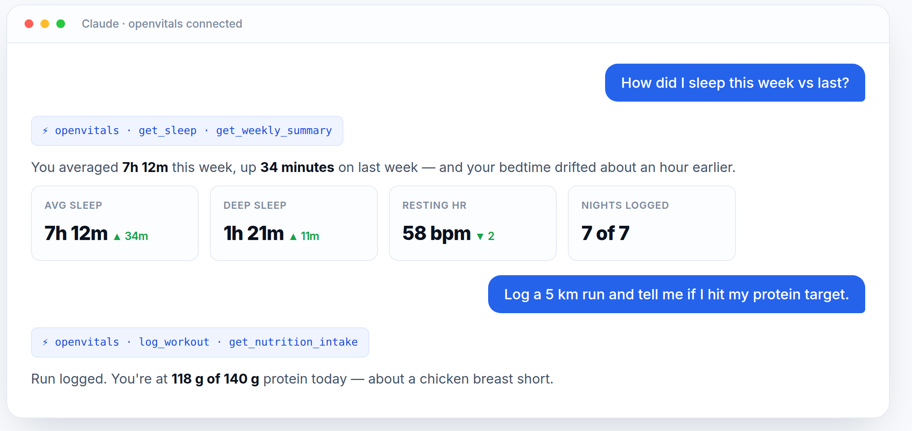

OpenVitals is a self-hosted MCP server that turns your Google Health data into ~60 tools Claude, ChatGPT or Cursor can actually reason over — heart, sleep, activity, nutrition and more. It runs on your hardware and your data never leaves it.
Node 22+ · MIT licensed · no subscription, no account, no cloud middleman

Google will happily analyse your health data for you — inside a paid product, on their servers. As one person, you shouldn't need a monthly plan just to ask "how did I sleep this week versus last?" OpenVitals hands that job to the AI you already use.
| A paid health-AI product | OpenVitals | |
|---|---|---|
| Cost | Monthly subscription | Free — uses the AI you already have |
| Your data | Leaves your device | Stays in a SQLite file on your box |
| Credentials | Their enterprise setup | Your own free Google Cloud OAuth client |
| The AI | Locked to their product | Any MCP client — Claude, ChatGPT, Cursor… |
| Access | Whatever they grant | Read-only Google scopes, secrets stay local |
OpenVitals syncs your Google Health data into a local SQLite database and exposes it over the Model Context Protocol. Your AI client connects to that endpoint and calls the tools it needs.
Google Health API ──► OpenVitals server ──► SQLite (your machine)
(your data) (always-on device) │
▼
your AI client ◄── POST /mcp (bearer token)
(Claude · ChatGPT) localhost, or a public URL
Heart, sleep, activity, glucose, SpO₂, temperature, ECG and body composition — read straight from your Google Health account.
Log meals, search foods, scan barcodes, save recipes, build workout plans and search exercises — all through chat.
Daily and weekly rollups, progress tracking, recommendations, and plan-versus-logged comparisons.
Google scopes are read-only. Database, tokens and OAuth secrets live on your machine and are gitignored.
An old laptop, a Raspberry Pi, a mini-PC. Anything that stays on. This project runs on a laptop-as-homelab-server.
Local clients hit localhost directly. Cloud apps reach it through a free ngrok, Cloudflare or Tailscale tunnel.
You need Node 22+, a Google account with health data, and something that stays powered on. Full walkthrough — including the Google Cloud setup — is in the README.
Make a free Google Cloud project, enable the Health API, add yourself as a test user, and download an OAuth client JSON. Read-only scopes only.
Install, build the web UI and start the server. A bearer token for /mcp is generated on first run.
Add it as an MCP server in Claude Code or Cursor, or paste the URL into a Claude / ChatGPT custom connector.
# 2 — clone and run $ git clone https://github.com/saiteja007-mv/openvitals.git $ cd openvitals && npm install $ npm run build && npm run server # → http://127.0.0.1:42815 # 3 — connect Claude Code (local, no tunnel needed) $ claude mcp add --transport http openvitals http://127.0.0.1:42815/mcp \ --header "Authorization: Bearer $(cat .data/mcp-token.txt)"
?token=get_heart · get_sleep · get_activity · get_glucose · get_spo2 · get_temperature · get_body_composition · sync_google_health
get_daily_summary · get_weekly_summary · get_progress · get_recommendation · compare_plan_vs_logged
log_meal · search_food · lookup_barcode · get_nutrition_intake · meal recipes
log_workout · search_exercises · workout plans · body metrics · habits · reminders · hydration
Free, MIT licensed, and running on your own hardware in about fifteen minutes. Stars and issues welcome.